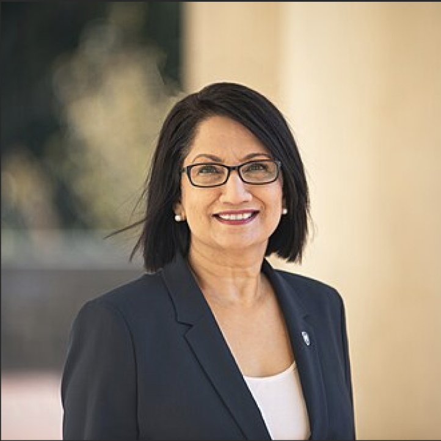

Project Overview
Our Client Engineering team designed and built an AI-powered Student Concierge MVP, an intelligent assistant that streamlines access to university resources. The solution enables students to locate relevant tools and information 95% faster, improving convenience and equity in academic outcomes. By enhancing the student experience and retention rates, the platform could save the university $10M+ annually if just 10% of at-risk students remain enrolled.
Today, the full solution—named MyResource—has been deployed at Penn State University, serving over 90,000 students.
Business Challenge
Penn State student leaders identified a critical need for improved access to campus services such as academic advising, health and wellness, and financial aid. University analysis confirmed these findings, highlighting gaps in resource navigation and student satisfaction. The challenge was to create a centralized, intuitive, and AI-powered solution that could:
- Reduce friction in accessing resources.
- Improve retention rates for at-risk students.
- Foster a sense of belonging and equity across the student body.
Solution
The Student Concierge was built using IBM watsonx, a generative AI-powered assistant designed to:
- Provide instant answers and recommendations about campus resources.
- Offer conversational search capabilities for intuitive navigation.
- Ensure AI guardrails for safe, accurate, and inclusive responses.
Technology Stack
- watsonx Orchestrate for conversational AI.
- watsonx.ai to host, train, and tune foundation models with Penn State data.
- watsonx Discovery for high-quality, accurate responses.
Design Process
1. User Research
- Conducted multiple rounds of interviews with students, faculty, and leadership to uncover pain points and expectations.
- Insights informed design priorities and feature selection.
2. Design Thinking Workshop
- Co-led a 4-hour session with 30+ participants (students, professors, faculty).
- Activities helped ideate and prioritize features, defining MVP scope.
3. Build & Design
- Architected conversation flow by aligning student challenges, data, and prioritized features (e.g., auto-scheduling advisor meetings).
- Collaborated with AI engineers on prompt engineering to refine assistant responses.
- Created user personas and a compelling demo storyline for an engaging, empathetic experience.
- Developed a business value assessment to quantify ROI and justify investment.
4. Client Engagement
- I was selected to present the live demo to Penn State President Neeli Bendapudi on-site at Penn State University, resulting in a successful sales win.
Impact
- 95% faster resource access for students.
- 90,000+ active users across Penn State campuses.
- Potential $10M+ annual savings through improved retention of at-risk students.
- Positioned for scalability to other higher education institutions.
Read more about the collaboration here.
“We're thrilled to collaborate with IBM to leverage advancements like generative AI, a critical tool to help us create a more student-centered experience, remove barriers, improve retention rates and further achieve a sense of belonging for all Penn Staters by allowing our students to navigate our institution seamlessly and intuitively.”
Neeli BendapudiPenn State University President